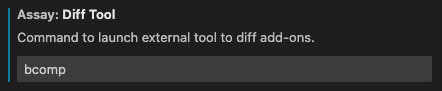
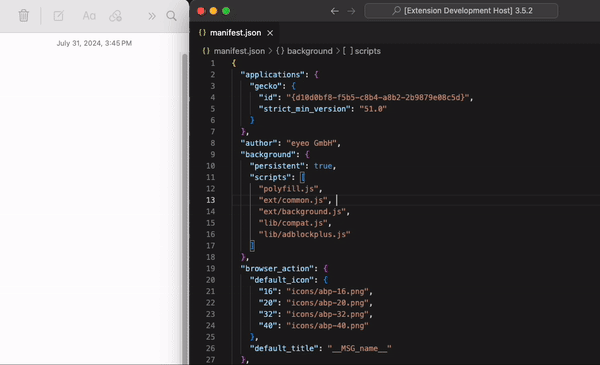

Welcome To Assay
A reviewer tool for Mozilla Firefox addons!
Instructions
API Keys

You will need a JWT Issuer and a JWT Secret to use Assay. These can be
obtained from the
Mozilla Developer Hub.
To add them to Assay, under the "Assay" menu, click "Enter API Key" and
"Enter API Secret" respectively.
Root Directory
This extension relies on having a dedicated directory for your reviews. This
is so the guid and versions of an addon are consistently at the same folder
depth. So, decide on a location for where you will perform reviews. Upon
your first request to download an addon, you will be prompted to set the
root folder path.
(This can be changed in the extension settings).
Diff Tool

To compare folders of addon versions, simply select exactly two folders in
the sidebar. Then, from the context menu, click the command "(Assay) Open in
Diff Tool". If it's your first time, enter the command that would launch the
tool from the cli (e.g: "opendiff"). This will open your desired diff tool
with the two folders as arguments.

This can be changed in the extension settings.
There is also an extension on the VSCode marketplace called
Compare Folders
which is a great tool to use within VSCode.
Downloading Addons & Versions
From an Input
You can download an addon version directly within VSCode by accessing the
command titled "Review New Addon Version" from the Assay menu. This will
prompt you for an addon identifier as well as the versions.
You will require the API keys mentioned above to use this feature.
From Review Page

On the review page, there is now a new button titled "Open in VSC" under
each version. This will automatically launch VSCode, perform the download,
and open the manifest in a text editor.
You will require the API keys mentioned above to use this feature.
Reviewing Versions
Adding/Removing Comments

To add a comment, click the line where you'd like to add a comment, then
either from the command palette or the context menu, select the "(Assay)
Add/Edit Comment". This will bring up a webview where you can enter your
comment. The comment will be saved to cache upon submission and a visual
indicator in the gutter and file tree will be displayed.
To remove a comment, click the line where the comment is, then either from
the command palette or the context menu, select the "(Assay) Delete
Comment". This will remove the comment from cache, the gutter icon, and any
file tree indicators if applicable.
Exporting Comments
To export the comments to a text format, either:
-
Open the context menu of any file/folder that is a subfolder of the
specific version folder, or the version folder itself, then select
"(Assay) Export Comments".
-
Navigate to and open a file that belongs to a version. Open the command
palette and choose "(Assay) Export Comments". This will export all
comments for the version the file belongs to.
Opening Review Page

To open the review page of an addon, there is a taskbar button titled
"{guid} - Review Page". Clicking that will bring you to the review page.